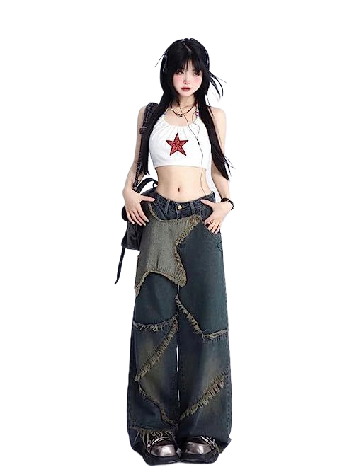
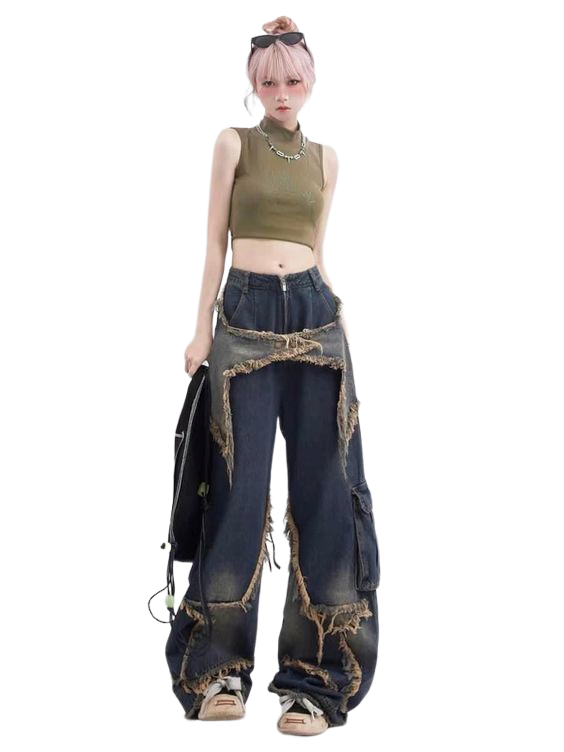
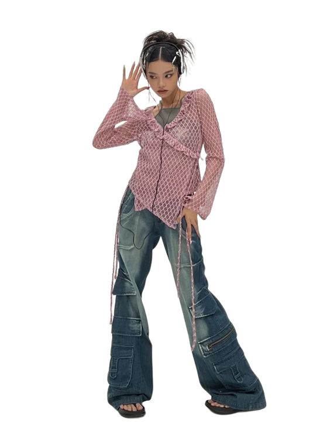

20`s
The beginning of the 1990s was the peak of the Supermodel era.

The outbreak of Covid had a long-lasting impact on fashion. People adopted cozy and practical clothing, and activewear became a fashion trend again. The value of comfort persisted after the lockdown, so the minimalism of the 90s resurfaced.

So far, the 2020s also brought back trends characteristic of other decades, like mini dresses and skirts from the 60s, and the Y2K trend from the 2000s. Let’s see what the next years of the decade will bring.

This is it for now for the brief fashion history through the decades. We went through the most important fashion trends, pieces, subcultures and designers you need to know.